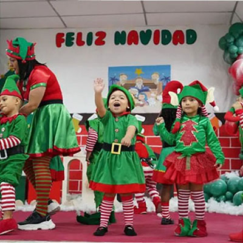
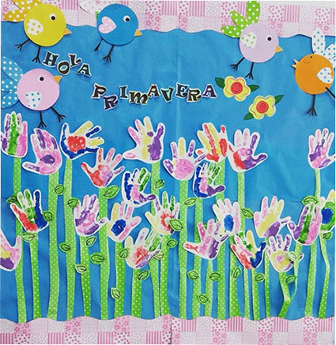
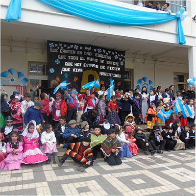
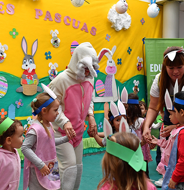
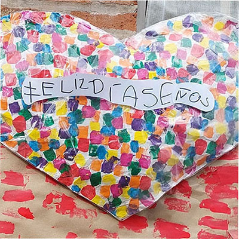
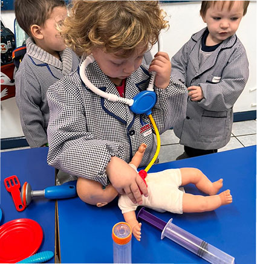

Actividades
A lo largo del año celebramos encuentros que hacen crecer nuestra comunidad educativa. Son espacios de juego, participación y disfrute en familia, donde Compartimos lo aprendido y seguimos construyendo vínculos

¡Feliz Navidad!

Bienvenida a la Primeravera

25 de Mayo

Día de la Familia

Pascuas

Día de la Maestra

Día de las Profesionales
Comunidad Solidaria
Nuestra institución trabaja junto a la comunidad educativa, con una mirada atenta al entorno y a quienes más lo necesitan.Por eso, los proyectos solidarios ocupan un lugar central en nuestra propuesta, te dejamos fotos de algunos proyectos.
Manos Verdes
Aprendimos a reciclar y reutilizar los materiales, incorporando hábitos ecológicos.
Regalar sonrisas
Donamos juguetes en buen estado a otros niños, aprendiendo a compartir.
Tapitas que ayudan
Reunimos tapitas plásticas para colaborar con causas solidarias y cuidar el ambiente.
De la tierra al corazón
Creamos una huerta y nuestros alumnos donaron parte de la cosecha a un comedor comunitario